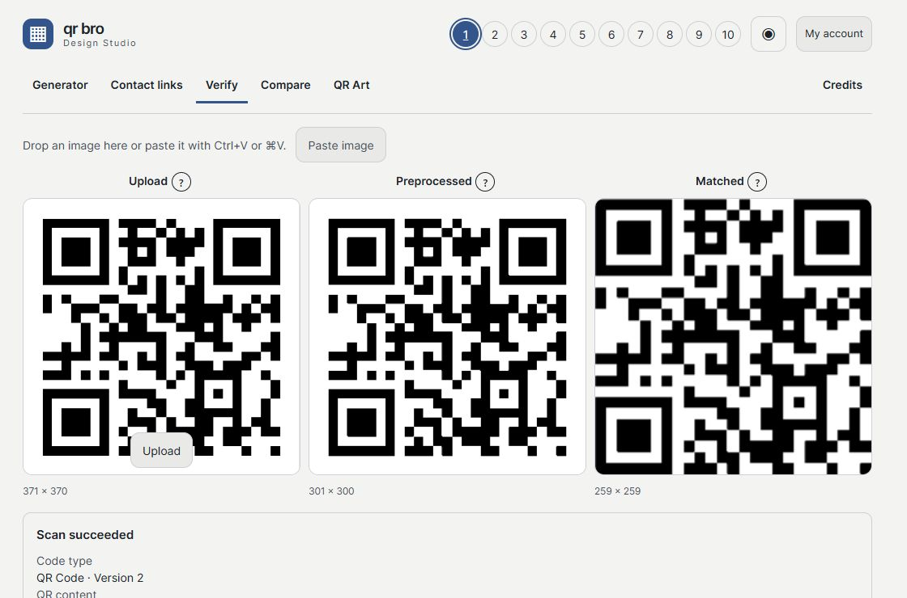

Руководство пользователя
Как использовать QR BRO с нуля
Откройте ссылки на контакты, чтобы создать ссылку, или скопируйте текст, который вы хотите, чтобы ваш QR-код содержал.

Откройте генератор и вставьте ссылку или текст в поле содержимого QR.

Пробуйте разные поля, цвета и формы, пока вам не понравится код в предварительном просмотре.

Нажмите большую кнопку «Загрузить PNG» под предварительным просмотром, чтобы сохранить QR-код в виде изображения.

Есть еще много вариантов, скриншоты которых я не делал и не загружал, но суть вы поняли.
Мне за это никто не платит, а моя собака целый час ждет прогулки.
Когда-нибудь я доберусь до остального.
Генератор
Открыть в QR BRO ↗Введите URL-адрес или текст. Предварительный просмотр обновляется по мере редактирования. Загрузите PNG для одного изображения или ZIP для отдельных слоев QR.

QR-контент
Вставьте полный текст, который должен прочитать сканер.
Кодирование
Выберите исправление ошибок и шаблон маски. Более высокая коррекция оставляет больше места для восстановления поврежденных данных, но может увеличить плотность.
Поля
Установите тихую границу в модулях. Четыре прозрачных модуля помогают сканерам обнаружить код. Управление шумом, безопасным пространством и слоями меняет окружающий дизайн.
Пиксели и маркеры
Выбирайте формы модулей и оформляйте угловые маркеры отдельно. Отсканируйте результат после изменения формы.
Цвета
Выберите светлые и темные цвета или инвертируйте их. Сохраняйте достаточный контраст для сканирования.
Расширенные параметры
Разверните эту группу, чтобы контролировать плотность, размеры и перспективу QR.
Версия и размер пикселя
Ограничьте диапазон версий QR и отрегулируйте размер пикселей. Если контент превышает лимит версии, сократите его или увеличьте максимум.
Трансформировать
Отрегулируйте перспективу по каждой оси. Проверьте экспортированное изображение после применения искажения.
Масштаб и аспект
Установите масштаб предварительного просмотра, размер холста, пропорции и прозрачность. Используйте элементы управления JSON для экспорта или перезагрузки редактируемых настроек.
Контактные ссылки
Открыть в QR BRO ↗Сначала выберите платформу. Введите запрошенного получателя, например международный номер телефона, имя пользователя или адрес электронной почты. Добавьте сообщение там, где это поддерживается. Для групповых полей электронной почты разделяйте получателей запятыми или пробелами. Скопируйте сгенерированную ссылку или выберите «Создать QR», чтобы открыть ее в генераторе.

Проверить
Открыть в QR BRO ↗Загрузите, перетащите или вставьте QR-изображение. Прочитайте декодированный контент и статус сканирования. Проверьте контрастность, тихую зону и плотность, затем скопируйте результат или отправьте его в генератор.

Различия изображений
Проверьте, какие пиксели изменились между исходным и обработанным изображением.
Настройки изображения
Попробуйте изменить размер, оттенки серого, контрастность, яркость или размытие. Заблокируйте настройку, чтобы сохранить ее во время случайных попыток. Сравните новый скан с оригиналом.
Сравнить
Открыть в QR BRO ↗Загрузите целевое изображение и исходный QR-код или используйте текущий вывод генератора в качестве источника. Третий предварительный просмотр отображает различия между модулями. Вы можете увеличить любой ввод и скопировать его декодированный текст.

Целевая обработка
Перед сравнением отрегулируйте оттенки серого, контрастность, яркость, размытие и пикселизацию.
Выравнивание сетки
Используйте цель или источник в качестве общей ссылки на сетку. Выбирайте независимое выравнивание, если изображения имеют разные поля. Ручное управление регулирует размер и поля сетки.
Внешний вид сетки
Включите сетку, выберите изображения, на которых она отображается, и настройте цвет и непрозрачность линий.
Настройки наложения
Включите наложение и отрегулируйте смешивание и непрозрачность, чтобы сравнить перекрывающиеся детали.
Отличия настроек
Выберите цветовой режим для совпадений, тип различия или интенсивность. Выберите модули для более детального изучения. Измените порядок выделенных фрагментов или измените их идентифицирующие цвета.
Сравнительная статистика
Прочтите количество несоответствий и среднюю яркость, чтобы оценить выбранное сравнение.
Настройки коррекции
Настройте коррекцию, просмотрите ее, выделите различия и загрузите изображение или маску коррекции.
Моя учетная запись и слоты сохранения
Открыть в QR BRO ↗Используйте пронумерованные кнопки для переключения между десятью локальными проектами. Войдите в систему, чтобы синхронизировать данные между устройствами. Создайте учетную запись с адресом электронной почты и паролем и подтвердите ее, используя ссылку или код электронной почты. Также доступны Google и GitHub. В своей учетной записи вы можете редактировать свой профиль, управлять методами входа и двухфакторной аутентификацией, просматривать конфликты синхронизации, создавать резервные копии настроек или выходить из системы.

Внешний вид и язык
Открыть в QR BRO ↗Откройте кнопку появления рядом со слотами для сохранения. Выберите язык, тему и светлый или темный режим. Ваш выбор языка запоминается на этом устройстве.

Кредиты
Открыть в QR BRO ↗Открытые кредиты для ссылок создателей, библиотек и благодарностей. Условия использования указаны в подвале сайта.